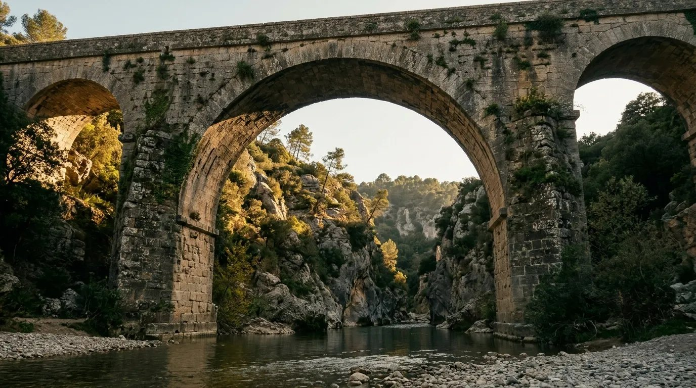
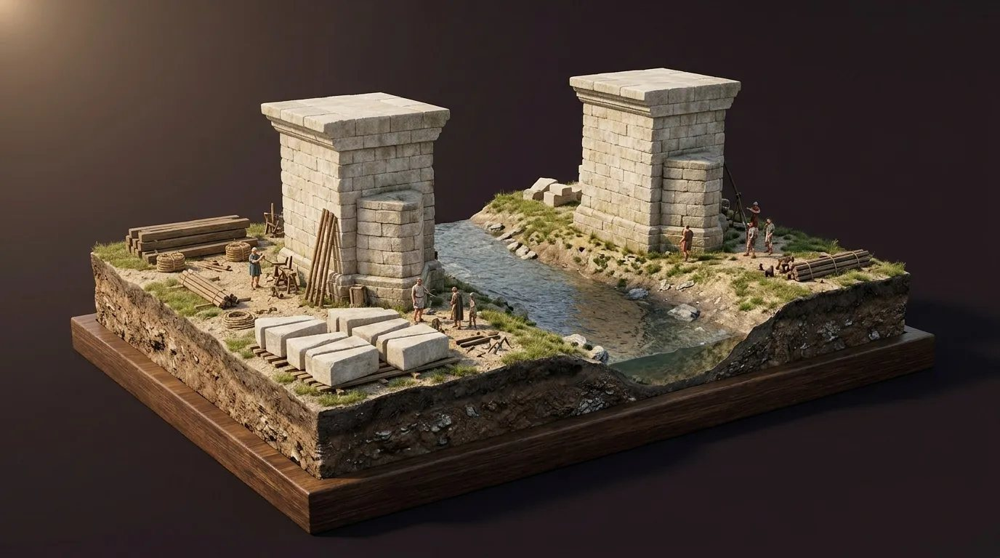
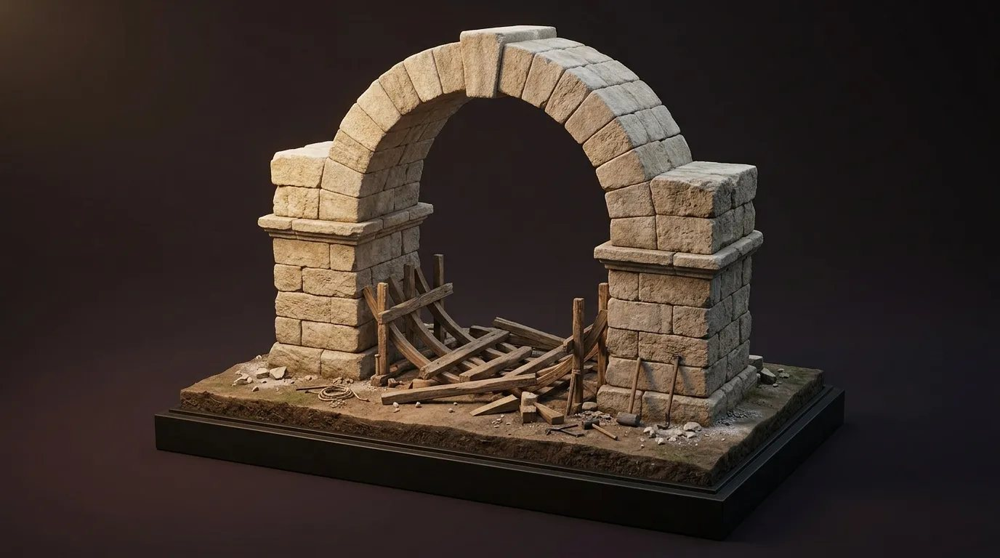

El Arco Romano: la Piedra que se Sostiene Sola
La piedra es un material paradójico. Aguanta enormes pesos cuando se la aprieta, pero se rompe con facilidad cuando se la dobla. Por eso una viga de piedra, el dintel que vemos sobre puertas y ventanas, no puede salvar grandes huecos: el peso la flexiona y se quiebra por el centro. Durante milenios, esa limitación marcó el tamaño de los edificios. El arco la resolvió con pura geometría.
Cada pieza empuja a la siguiente
En un arco, el peso no dobla la piedra: la aprieta. Cada bloque empuja contra sus vecinos y todos trabajan comprimidos, que es justo lo que la piedra hace mejor. Las piezas tienen nombre propio. Las dovelas son bloques tallados en forma de cuña. La clave es la dovela central, la más alta y la última en colocarse. Y los estribos o pilas son los apoyos que reciben el empuje del arco.
Ese empuje no solo va hacia abajo: también va hacia los lados. Un arco tiende a abrirse, y por eso necesita apoyos muy firmes o arcos vecinos que lo contrarresten. En un acueducto, cada arco empuja contra el siguiente y el conjunto se equilibra; solo los extremos necesitan un apoyo especialmente robusto.

La cimbra: el andamio que desaparece
Un arco a medio construir no se sostiene: hasta que no se coloca la clave, las dovelas se caerían. Por eso los romanos construían sobre una cimbra, un armazón de madera con la misma curva que el arco. Sobre ella se iban colocando las dovelas desde los dos lados hacia el centro. Cuando por fin se encajaba la clave, el arco quedaba cerrado y se podía retirar la cimbra, la operación que todavía hoy se llama descimbrar.
Era el momento más delicado de la obra. Si el arco estaba bien trazado, las piedras se asentaban unos milímetros y quedaban trabadas para siempre. La misma cimbra se desmontaba y se reutilizaba en el arco siguiente, lo que permitía construir series de arcos idénticos con gran rapidez.
Roma no lo inventó, pero lo llevó a lo gigante
Los romanos no inventaron el arco: ya se usaba en Mesopotamia y en Egipto, y los etruscos lo dominaban en sus puertas y cloacas. El mérito romano fue utilizarlo en serie y a escala monumental, en puentes, acueductos, anfiteatros y bóvedas. Con arcos superpuestos, el Pont du Gard alcanza casi 49 metros de altura. El puente de Alcántara, terminado hacia el año 106 bajo Trajano, sigue cruzando el Tajo.
El acueducto de Segovia es quizá el ejemplo más elocuente: sus arcos de granito se sostienen sin argamasa, solo por el ajuste de sus piedras, desde hace casi dos mil años. Un arco no se sostiene por el mortero sino por la forma. Mientras todas sus piezas sigan apretadas, puede durar milenios.

"Un arco no se sostiene por el mortero sino por la forma."
— Memorias del Pasado
Fuentes y referencias
- Vitruvio, De architectura, libro VI
- Jean-Pierre Adam, La construcción romana: materiales y técnicas, 1984
- Colin O'Connor, Roman Bridges, 1993
Aprende más
Prueba gratis el curso Ingeniería romana →